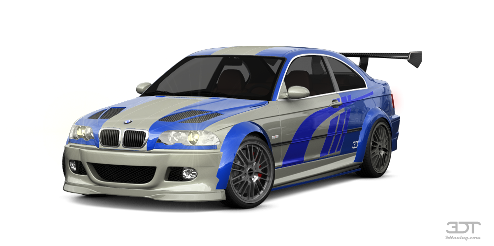

La historia del M3 con motor V8 que se convirtió en un héroe del Need for Speed
Historia Resumida
En el año 2001, BMW buscaba incrementar su presencia en los campeonatos mundiales de turismos y encontró una oportunidad en las American Le Mans Series, que requerían que los fabricantes construyeran al menos 10 unidades de calle del coche de competición y las pusieran a la venta en dos continentes diferentes.
BMW fue el único fabricante que se acogió a esta oportunidad, lo que llevó a la creación del BMW M3 GTR de calle, basado en el BMW M3 E46. Fue construido de forma artesanal por BMW Motorsport en la planta de BMW en Regensburg, junto con los coches de competición.
El chasis del M3 GTR estaba compartido con el coche de competición y era mucho más rígido que el del M3 E46 de calle. Tenía un esquema de suspensión único diseñado por BMW Motorsport para los M3 GTR, lo que lo hacía poco amigable para una conducción de diario.
El M3 GTR era un coche de competición matriculable y su exterior, aunque algo llamativo, no era demasiado ostentoso. Conservaba las llantas de 19 pulgadas del M3 y tenía un kit de carrocería que incluía nuevos paragolpes, un alerón trasero fijo en fibra de carbono y un capó con entradas de aire.
Bajo el capó, el M3 GTR tenía un nuevo motor V8 de 4.0 litros llamado P60B40 que desarrollaba 450 CV en su versión de competición. En los M3 de calle, su potencia fue reducida a unos 350 CV a 7.250 rpm y tenía un sistema de lubricación por cárter seco. La potencia se transmitía al suelo a través de un diferencial electrónico de BMW Motorsport.
En el interior, el M3 GTR tenía una atmósfera similar al CSL y prescindía de los asientos traseros. Los bácquets eran realmente duros y el equipamiento era muy parco para ahorrar peso.
Solo se fabricaron y vendieron 10 unidades del M3 GTR a un precio de 250.000 euros cada una. Estos coches están en manos privadas y la retirada de las reglas de homologación de la ALMS en 2002 llevó a BMW a retirarse de la competición.
Aunque algunos equipos privados compitieron con los M3 GTR en otros eventos, la vida de los BMW M3 GTR fue breve pero muy exitosa en la ALMS.
Video
Resumen de video
El BMW E46 M3 GTR es uno de los autos más icónicos de la serie de juegos Need for Speed, conocido por su velocidad, aceleración y manejo. Sin embargo, la historia del automóvil va más allá del juego, ya que fue creado en 2001 para vencer la racha ganadora de Porsche en el campeonato alemán de GT.
El automóvil era un automóvil de carreras que presentaba un ángulo de inclinación único de 90 grados del motor P60B40 con 460 caballos de fuerza, e inicialmente era exclusivo para las carreras. BMW terminó creando 10 versiones legales del automóvil para la calle para cumplir con las regulaciones.
Estos autos tenían un motor V8 que producía 350 caballos de fuerza y carecían de características de lujo.
El destino del BMW E46 M3 GTR en Estados Unidos no fue bueno, ya que las regulaciones impedían que el fabricante produjera la cantidad mínima de 100 autos y 1000 motores requeridos para la homologación de carreras, y BMW retiró el auto después de solo una temporada exitosa. Sin embargo, en Europa, el M3 GTR tenía futuro y participó en carreras entre 2003 y 2005.
Creador del video
ANDEJES, en youtube
Video
Resumen de video
The BMW M3 GTR V8 was created to compete with Porsche's racing dominance in the late 1990s and featured a new V8 engine, but only 10 units were required and it is uncertain what happened to them. It was later revealed that the cars were not put up for sale due to halted production plans as a result of changes in regulations by the ACO and ALMS.
Despite never making it to the mainstream market, the M3 GTR V8 continued to win in the ALMS category through other variants of the M3 until 2011 and became an iconic car in the world of video games, particularly in the game Need for Speed: Most Wanted.
Creador del video:
FORZA PANDA, en youtube
Webgrafia